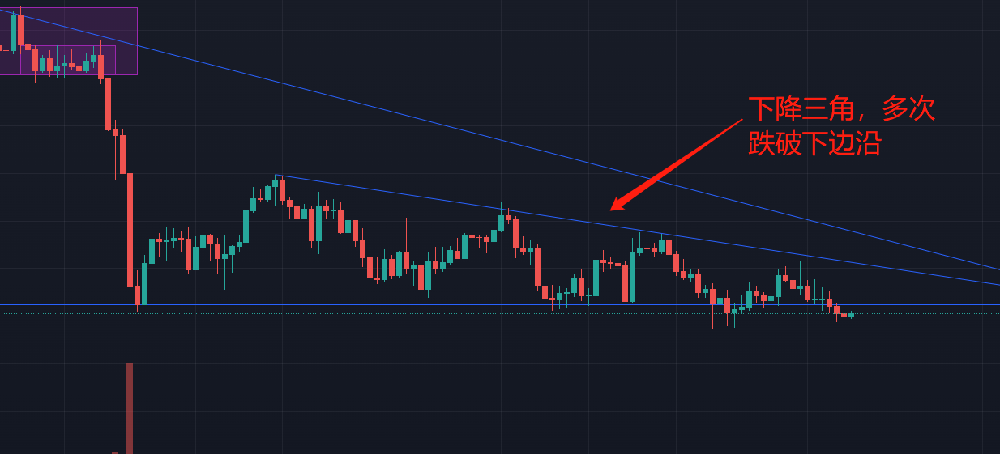

简单记录一下今日的行情以及相关技术指标
A股
不用看，a股又是哭爹喊娘的一天，FED的加息预期还是严重打压了市场，预期之后外资将会加速离场，回流美国，这也会使得a股更加不乐观
原本央妈降准放水1.2万亿也只是杯水车薪，毕竟在宣布降准后的没几天就是将近一万亿的MLF到期日，放了和没放根本没区别，简单来说也就是个骗炮的动作，谁信谁接盘.jpg
a股可真是在失望方面一点都不让人失望呢(苦笑)
港美股
港股主要还是tx，价格很稳定，每天跌个几个点.jpg
中概互联被套了一些，还好也是没买很多，大国博弈之下，左侧交易太惨了，暂不言底
整体来说，港股也是低迷的一天
美股今晚开盘，三大股指齐跌，原本FED议息会议落地带来的爆拉看来也只是短期的情绪释放，加息&加速taper所带来的流动性回收是实实在在的，故而短时间内还是会承压，这无法避免
另外，今天Omicron也愈加严重了，英国有继续封锁的危险，貌似Omicron感染性上升，但是致死率却降低了很多，这也是近期市场的一个风险，不过如果只是感染性上升，致死率反而降低的话，估摸着欧洲&美国会接着躺平，毕竟是有传统艺能了，对股市不太会有长期的影响
当然了，如果Omicron的危害远超预期，那么叠加加息预期，美股会迎来大幅的下跌，压力也会来到FED这一边，如果真出现这种情况，那么对于我这种长跑玩家可以慢慢捡点仓位
Crypto
BTC还是处于弱势的震荡走势，多次试探45000-46000之间的支撑点位
BTCD指标也不容乐观，山寨币也不断被放血
总的来说并不是很好，悲观来看，熊市可能已经来临
不过，在4小时级别以及日线级别的图表上，我们可以发现双重的底背离，这在短期是一个看涨的信号
日线级别上，量能呈现背离状态，下跌动能减弱，并且日线开始金叉
4小时级别上，macd呈现明显的背离状态
另外，四小时级别上，BTC仍大致处在一个下降三角中

当BTC反弹带量突破上边沿时，可以考虑入场做多
当然了，指标仅供参考，现在还未看见趋势反转的迹象，仍处于空头行情之中，预期的迫近53800左右趋势线的动作也迟迟未有
市场并不太乐观.jpg，即使入场做多也需保持谨慎
结语
亏钱的一天哈哈，大行情不好，多看少动.jpg
本文均不构成投资建议，DYOS